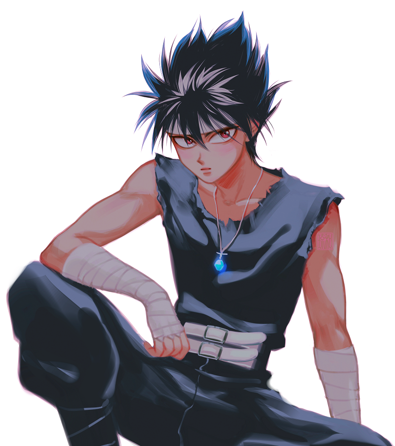
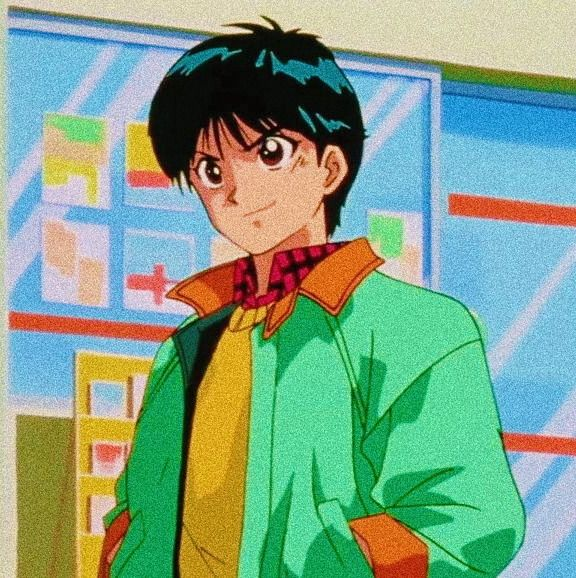
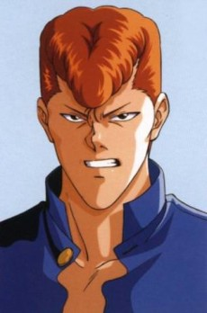

| Name |
Description |
Fun Facts |
Picture |
Read More |
| Hiei |
Hiei (飛影ひえい, Literally meaning: Flying Shadow) also known as, Jaganshi Hiei (Jaganshi is an epithet meaning "Master of the Evil Eye"), is a main character in the anime and manga series YuYu Hakusho by Yoshihiro Togashi. He is called "Hiei of the Evil Eye" in the Viz manga and Vincent in Filipino dub. |
Hiei is known to be short (5'3 to be exact), Hiei was originally meant to be a starter villain, but his
popularity brought him back as a main character, One of Hiei's strongest techniques, where he calls upon
the black flames of the demon realm and shapes them into a dragon before firing them at the opponent.
This attack is very hard to control, but the flames it is made up of can reduce even a demon's body to
ashes in one shot. |
 |
Read More |
| Yusuke Urameshi |
Yusuke Urameshi (浦飯 幽助, Urameshi Yūsuke) is the main protagonist of the manga and anime series YuYu
Hakusho. He is a Spirit Detective who is tasked with protecting Human World from various supernatural
threats over the course of the series and his closest friends as well as greatest allies include
Kuwabara, Kurama, Hiei, Keiko, Genkai, Koenma and Botan. He is also the de facto leader of Team Urameshi
and the general person to look to when the going gets tough. |
Before becoming a Spirit Detective, he was the strongest kid in his school. Spirit Gun: Yusuke's first
and signature attack, which has him fire a blast of spirit energy from his finger like a bullet. It can
be fired an almost unlimited amount of times, as long as Yusuke has energy. By firing it with both
fingers, its power greatly increases. Spirit Wave: Yusuke channels all of his spirit energy and releases
it through either a physical attack or an energy blast, dealing incredible damage to whoever he hits. It
is much stronger at close-range. |
 |
Read More |
| Kazuma Kuwabara |
Kuwabara is the second-toughest kid and self-proclaimed punk at Sarayashiki Junior High School, and he
is always trying to usurp Yusuke Urameshi's position as the toughest. He claims to have never lost a
fight until he met Yusuke. |
In both the Japanese and English dub versions of the anime, Kuwabara's Spirit Sword, when activated, has
a similar sound effect to the lightsaber weapon of the Star Wars franchise. Spirit Sword (霊剣, Rei Ken,
Aura Sword in the Viz translation): This is Kuwabara's signature attack, where he creates a sword
comprised only of his Spirit Energy. Its strength depends on how much energy Kuwabara focuses into it.
His name, Kazuma, means peace and truth.
|
 |
Read More |